Cosa vedere
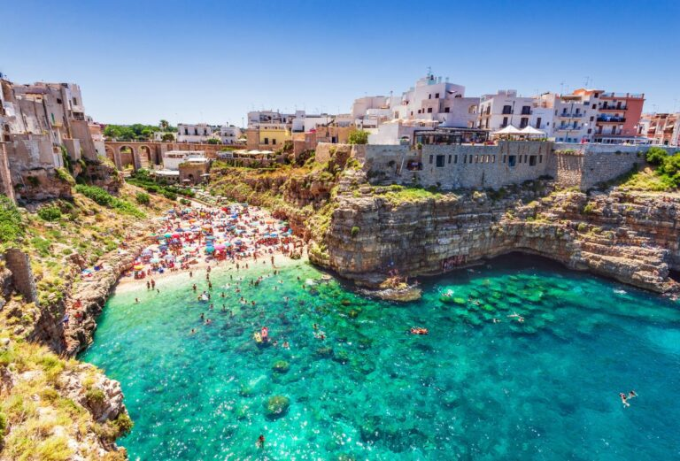
Polignano a Mare
Il nucleo più antico di Polignano sorge su uno sperone roccioso a strapiombo sul mare. Di notevole interesse le grotte marine. Nel 2008 ha ricevuto la Bandiera Blu.
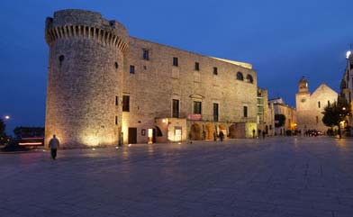
Conversano
Sorge in collina a 7 km dal mare. Il castello e la Cattedrale fanno da cornice a Largo di Corte. Di notevole interesse il Monastero di San Benedetto.
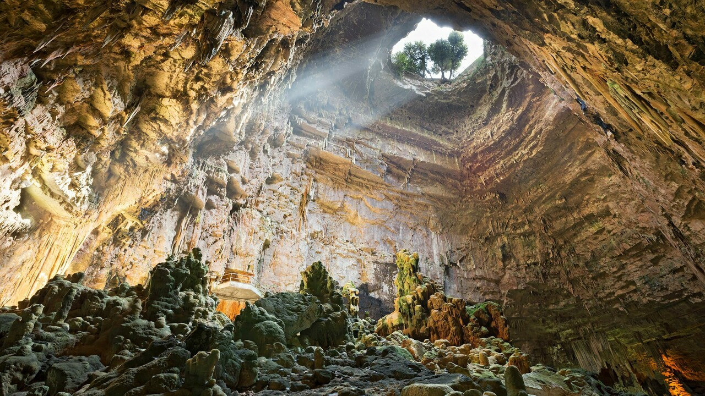
Grotte di Castellana
Un complesso di cavità sotterranee di origine carsica tra i più spettacolari d'Italia, che raggiungono una profondità di 122 metri dalla superficie.
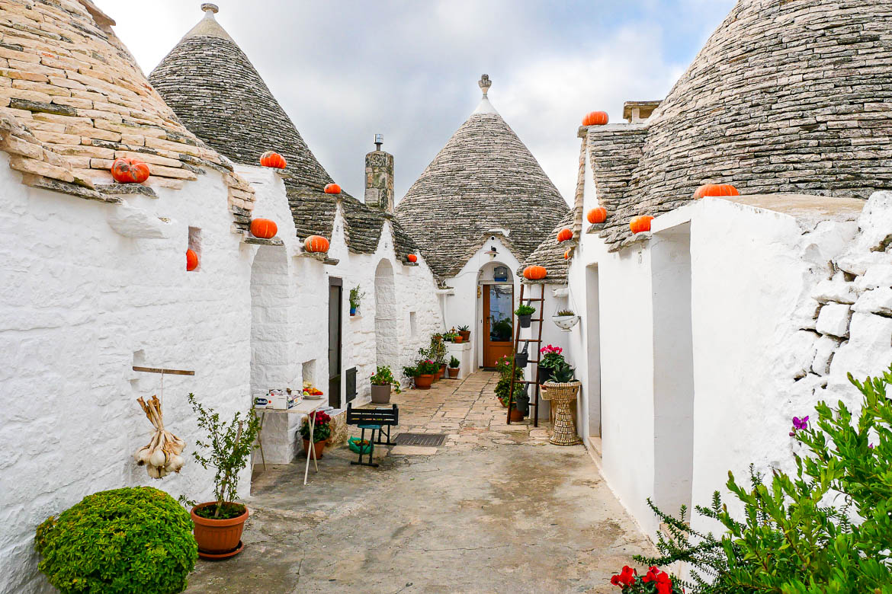
Alberobello
Sorge al centro della Valle d'Itria. È tutta da scoprire percorrendo le stradine delimitate dai famosi trulli e ricche di artigianato locale.
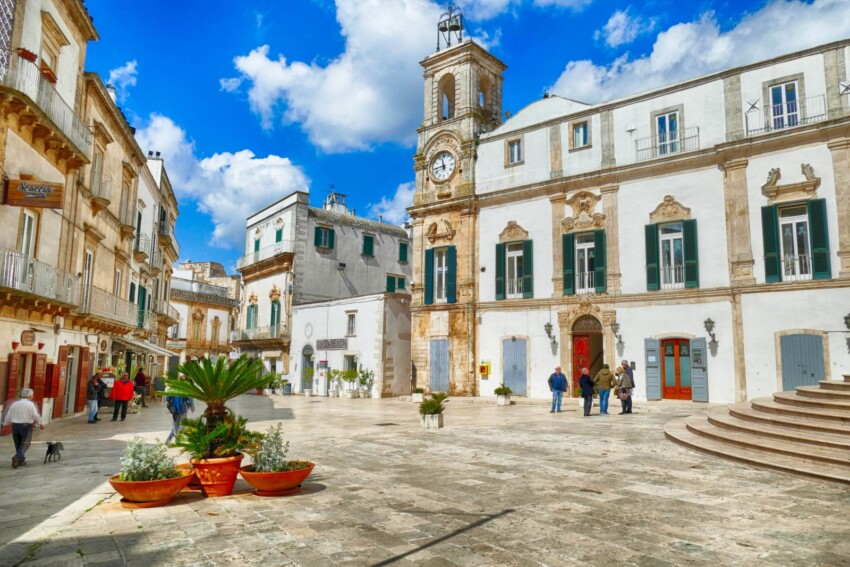
Martina Franca
Nota per l'architettura barocca e il festival musicale. Sorge sulle colline della Murgia in una posizione che offre splendide vedute sulla Valle d'Itria.
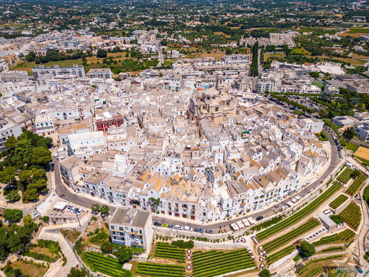
Locorotondo
Tra i borghi più belli d'Italia. Il centro storico è un affascinante insieme di piccole case bianche poste su anelli concentrici.
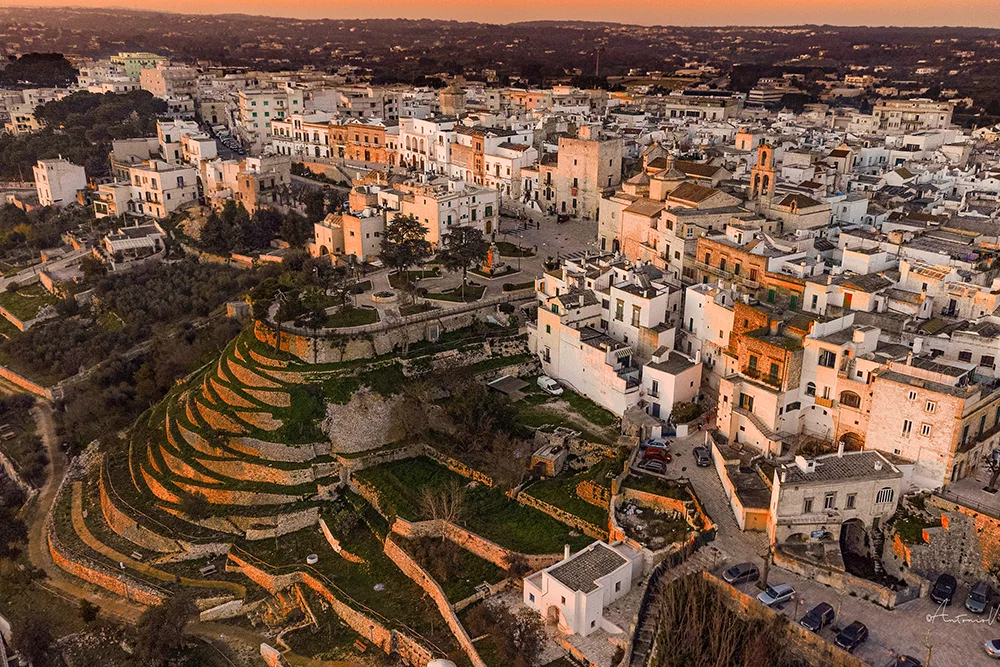
Cisternino
Un piccolo, delizioso paese della Valle d'Itria. Da vedere i palazzi storici, la Torre di Porta Grande, le chiese e le numerose Masserie presenti.
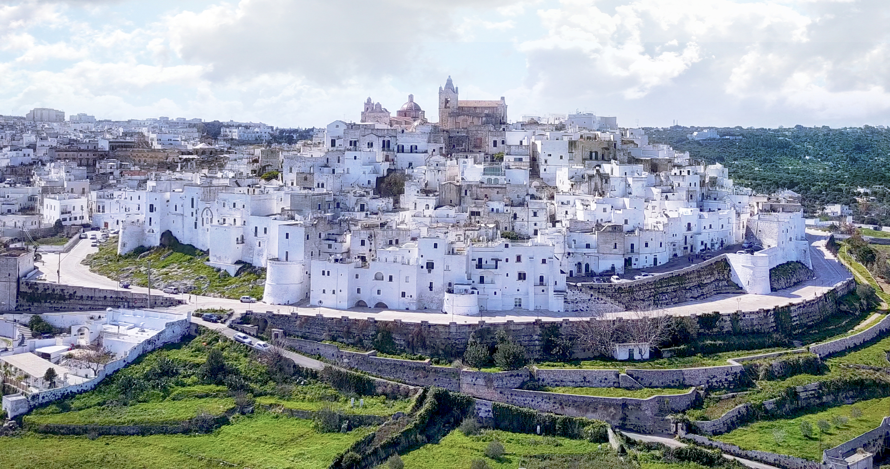
Ostuni
Detta anche Città Bianca, sorge su un colle panoramico. Offre passeggiate nel centro storico e tante meraviglie affacciate sulla piana degli ulivi.
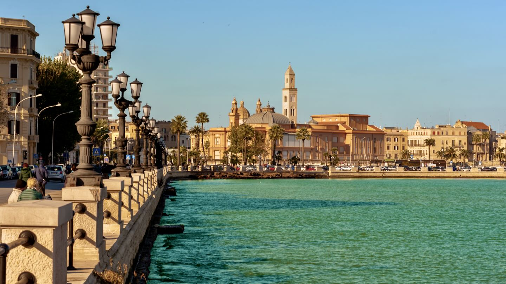
Bari
Ideale per lo shopping. Prima fra tutte la Basilica di San Nicola, la Cattedrale di San Sabino e il centro storico delimitato dalla lunga muraglia.
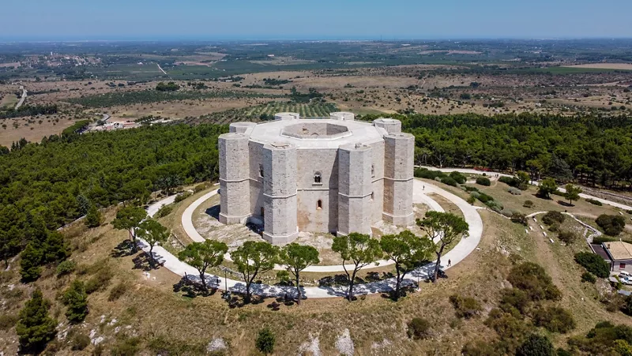
Trani e Castel del Monte
Trani con la sua spettacolare Cattedrale sul mare. Poco distante sorge Castel del Monte, un'architettura unica patrimonio dell'umanità dell'UNESCO.
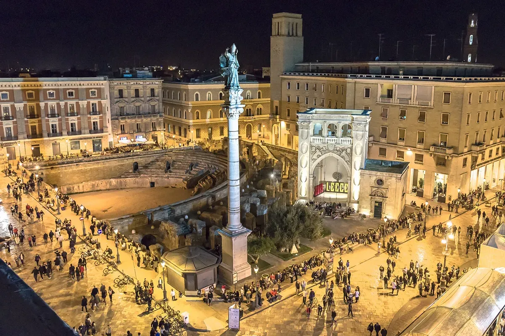
Lecce e il Salento
Lecce è un gioiello del Barocco. Il Salento offre ai visitatori un mare cristallino, spiagge bianche e una straordinaria enogastronomia locale.
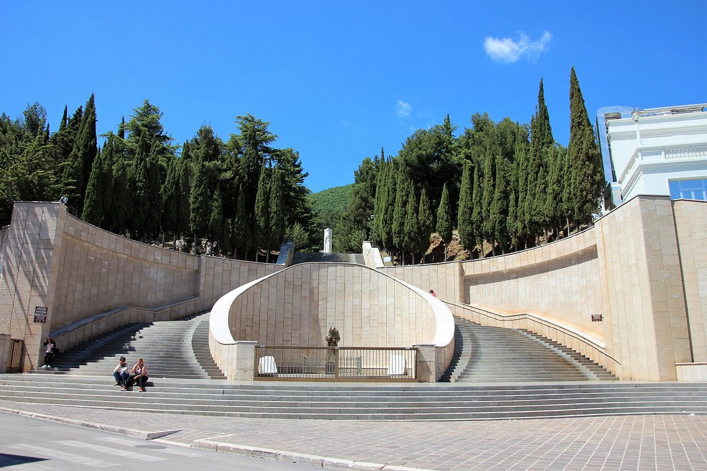
San Giovanni Rotondo
Luogo di profondo culto cattolico che ospita il celebre Santuario di Padre Pio, meta di pellegrinaggi circondato dal verde del promontorio del Gargano.